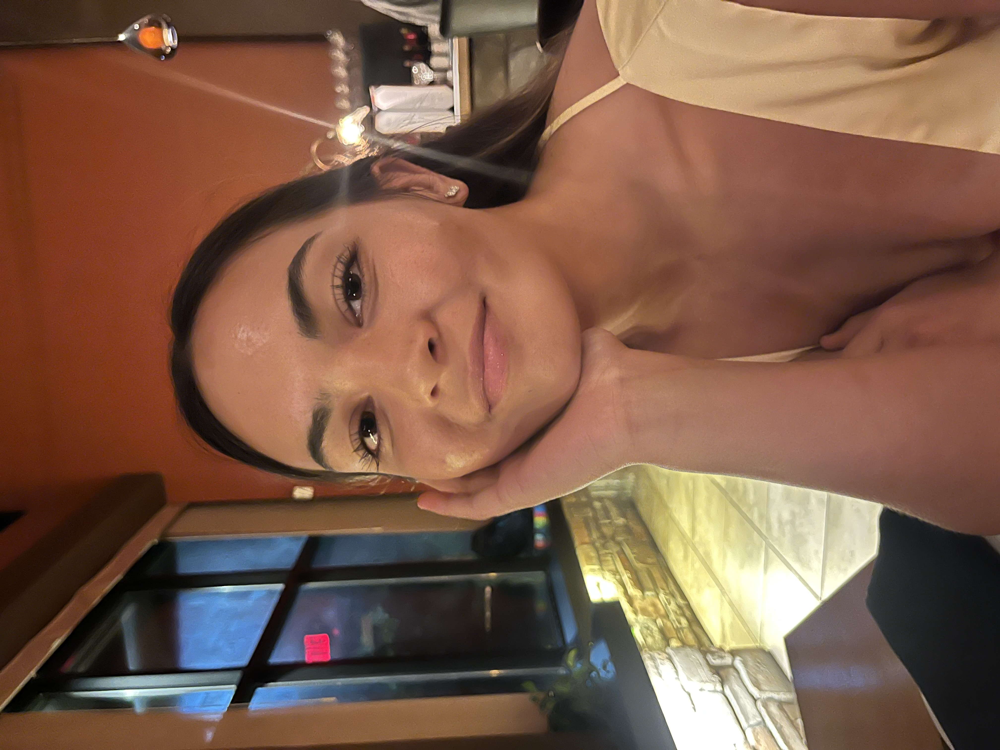

Who are we?
The Corvallis Food Project is a non-profit organization that is dedicated to providing food to...
What is our mission?
Our mission aims to support those in need within the community of Corvallis Oregon... you can do all this writing because you make it seem so easy. youre so smart and passionate and its beautiful watching you make magic.
Meet the representatives!
Shahar Miles
Position: Director
Shahar Miles is a senior student attending Oregon State University and is the current Director of the Corvallis Food Project. She is a marketing major and plans on working with Nike in her near future. Outside of saving the world, Shahar has many hobbies, such as: exploring the realm of Sales, learning something new about people everyday, reading, self-improvement, and loving the people she cares about. Some of her most ambitious qualities is that Shahar knows what she wants. Rather it be a job, or a person, or a drink such as a horchatta, Shahar always knows what she wants for herself.
Camryn Lee
Position: Idk
Camryn Lee is a senior student attending Oregon State University and is currently .....